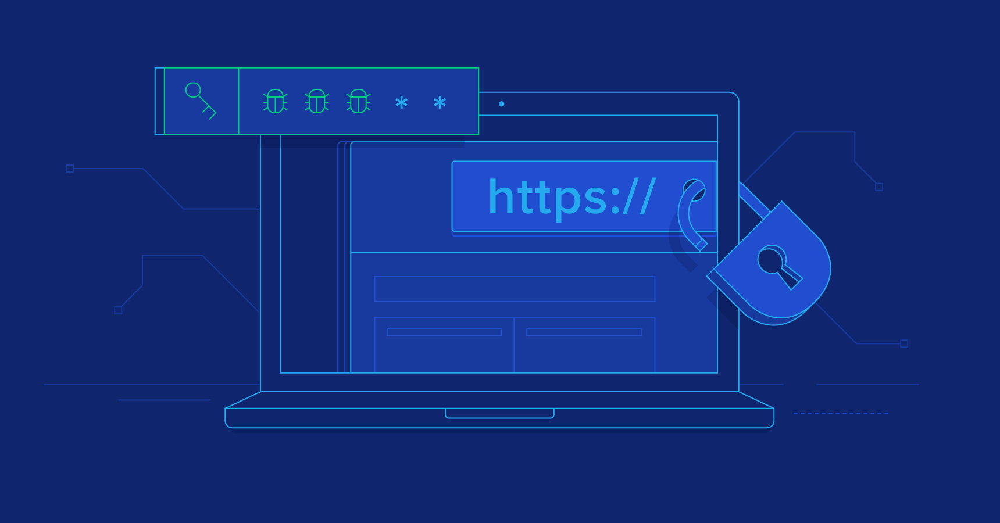

Welcome to my first website.
How would you advise a potential client to secure his/her website from web security attacks? Note: the word count for your answer should not be greater than 250 words
In order to create online security, you must focus on customers, servers and the application. I would like to talk about general online security because many of the break-ins that happen on a website can be because you have weak passwords and not least credentials/saved passwords in, for example, browsers and other places. Possibly change the password every month so that the client is not the problem with security. Would also recommend 3rd party authorization for login. It is important that we enter an automatic user time-out, which means that the user who has left the credentials hanging in the browser will be charged. This is to make a session expired. And then I would further inform them about the various threats to which they may be exposed such as Cross-site Scripting (XSS), SQL and Cross-site request (CSRF) and which of them is more exposed to another.]
The most common type of security threat is XSS, this is explained by the fact that the attack on the page occurs when data enters the web application through an untrusted source. The malicious data that can be sent often has the form of known segments such as JavaScript, HTML or other types of code that the browser can execute. And these attacks usually retrieve private data and cookies from the user. (bank id, password) The best way to protect yourself is to turn off HTTP TRACE on all web servers.
SQL is a method that manipulates to do things it wasn't meant to do. Examples of this are that they extract sensitive data from a database such as usernames and passwords. But such an attack depends on knowing which computer systems are in use.
CSRF is an attack that causes users to submit malicious requests to others. This comes in the form of e-mail and chat as a rule. By taking the victim's identity, they can ask for sensitive info because they have the right access. This means that the site has no way of distinguishing between the forged requests sent by the victim.
